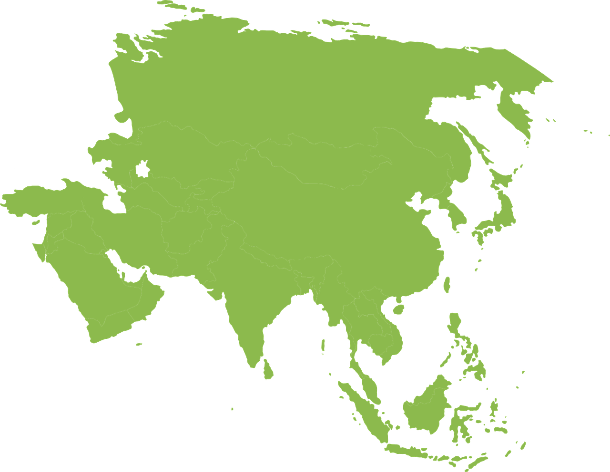
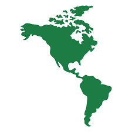
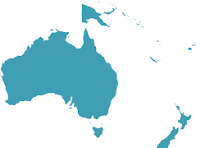

Europa

Europa es un continente ubicado enteramente en el hemisferio norte y mayoritariamente en el hemisferio oriental. Las fronteras de Europa están situadas en la mitad occidental del hemisferio norte, limitada por el océano Ártico en el norte, hasta el mar Mediterráneo por el sur.
Francia
España
Italia
Reino Unido
Alemania
Grecia
Rusia
Polonia
Portugal
Paises Bajos
Hungria
Croacia
Asia
Asia es el continente más grande y poblado de la Tierra. Con 44,6 millones de km² aproximadamente, representa el 8,7 % de la superficie de la tierra y el 30 % de las tierras emergidas. En agosto de 2023 tiene alrededor de 4757 millones de habitantes, que representan el 59 % de la población mundial.  ChinaTurquia
Tailandia
Japon
Arabia Saudi
Arabia Saudi
America
América es el segundo continente más grande de la Tierra, después de Asia. Ocupa gran parte del hemisferio occidental del planeta.
Estados UnidosMexico
Canada
Ocenia
Oceanía es el continente más pequeño y menos poblado de la tierra. Es un continente insular, lo que quiere decir que la mayoría de sus países no tienen fronteras o son islas. Está constituido por la plataforma continental de Australia y los archipiélagos de Melanesia, Micronesia y Polinesia.
Australia